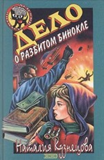

Взорванный император, или Скромный герой
Взорванный император, или Скромный герой
Только-только собрался Ромка описать события прошедшего лета, как вдруг, гуляя со Славкой, встретил у метро одного из персонажей своего будущего детектива — жуткого типа, покушавшегося на жизнь Славкиной сестры. И тут же выяснилось, что из квартиры Славкиного дяди, собирателя редких книг, похищены старинные фолианты. Но зачем закоренелому бандиту какие-то книги, причем не самые ценные? А если дело в таинственных инициалах на их переплетах? У Ромки зреет хитроумный план поимки злодея. Друзья берутся за дело, удача кажется совсем близкой, но тут…